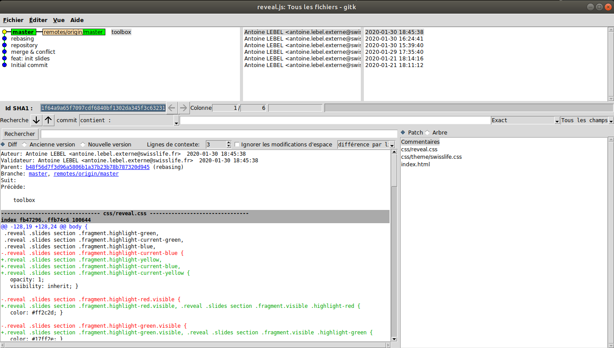

Un peu d’histoire, qu’est-ce que GIT ?
- Outil de versioning et gestion du code
- Leader mondial
- Créé par Linus Torvalds en 2005
- Aujourd’hui en version 2.25.0 (13/01/2020)
- « Git » signifie « connard » en argot britannique
- Compatible toutes plateformes
Le versioning avec GIT
Historique des modifications
Fusion de code, dit « merge »
Résolution des conflits
Système distribué
Système de branches
Tag de version
Let's Git started!

Pour faire simple
- Utilisation d'une base objet locale, le dossier .git
- Git suit les changements de contenu, pas le fichier entier
- Chaque enregistrement de modification est un commit
- Tous les commits forment le code entier du projet
Git est révolutionnaire dans sa méthode de gestion des changements
Il ne gère que des instantanés d'une version...
Ainsi si un fichier n'a pas changé, il fait une référence vers le fichier original
Et le tout en local sur votre poste, fini la latence!
GIT gère 3 états pour un fichier :
- Modifié => Le fichier est modifié mais non validé dans la base locale
- Indexé => Le fichier modifié sera enregistré dans la base locale
- Validé (Commité) => Les données sont enregistrées dans la base locale
Nous avons donc 3 sections pour un projet GIT

Pour indexer un fichier et créer un commit
# On ajoute le fichier à la zone de "staging" / d'index
git add fichier.txt
# On créer le commit qui sera enregistré en base locale
git commit -m 'mon nom de commit'
Seul fichier.txt a été modifié, les autres fichiers ne sont que des références vers les commits précédents (cf. parents)
Au final, avec plusieurs commit enregistrés, notre arbre projet ressemblera à ça :
* mon nom de commit
* Commit 2
* Commit 1
* Init project
Le dernier commit contiendra une référence vers le commit précédent, lui-même vers son parent etc...
Chaque nouvelle modification validée (donc commitée) s'ajoutera à la liste en haut de l'arbre git.
Les commits
Un commit est morceau du code de l'application
Un commit est identifié par un hash unique (gestion de l'intégrité)
24b9da6552252987aa493b52f8696cd6d3b00373 Git raccourci régulièrement ce hash à 9 caractères pour faciliter la lecture
git add [options...] [pathspec…]
# Utilisation classique pour ajouter tout ce qui est dans l'index
git add -A
# Créer le commit avec un message
git commit -m "Message de commit"
Le commit "Message de commit" est créé sur le repository local avec un nouveau hash unique
Commiter dans le commit précédent, c'est possible?
En cas d'erreur ou d'oubli dans un commit, vous pouvez modifier un fichier et le commiter directement dans le commit précédent
git add -A
git commit --amend
Le dernier commit est modifié pour y insérer vos changements indexés
Les branches

Tout arbre a des branches, alors pour git c'est pareil !

Une branche n'est qu'un pointeur vers un commit
La branche principale de Git se nomme master
Chaque commit sur la branche master fait avancer le pointeur d'un commit
Pour créer une nouvelle branche testing
git branch testing
Un nouveau pointeur vers le commit où nous sommes va être créé
Comment Git sait-il où nous sommes actuellement?
Grâce au pointeur HEAD qui indique notre position, on remarque que créer une branche ne nous bascule pas automatiquement dessus
Basculer sur notre branche fraichement créée
git checkout testing
On peut aussi créer une branche et basculer directement dessus avec une commande similaire
# Créer une branche et basculer dessus
git branch testing
git checkout testing
# Commande simplifiée
git checkout -b testing
La fusion

Il existe 2 types de fusions, fast-forward et three-way merge
Git choisit automatiquement quel type de fusion adopter
Fast-Forward Merge
* commit 4 (HEAD -> hotfix)
* commit 3
* commit 2 (master)
* commit 1
Nous avons créé 2 commits au dessus de master sur la branche hotfix
Ici le principe est simple, en fast-forward le pointeur de master sera remonté directement au niveau de hotfix (une avance rapide donc)
git checkout master
git merge hotfix # la commande de merge de hotfix sur master
Nous aurons donc pour résultat
* commit 4 (HEAD -> master, hotfix)
* commit 3
* commit 2
* commit 1
On peut maintenant supprimer la branche hotfix avec la commande git branch -d hotfix
Three-Way Merge
Fusion à 3 sources
Lorsque j'ajoute un commit sur testing, puis un nouveau commit sur master, je créé une divergence.
Pour fusionner testing sur master, git va utiliser 3 sources
- c2b9e => master
- 87ab2 => testing
- f30ab => leur ancêtre commun le plus proche
Un commit de fusion qui résulte de la fusion à 3 sources est créé.
Ce commit est spécial car il possède plus d'un parent.
* 1337c # Commit de fusion
|\
* | c2b9e (master)
| * 87ab2 (testing)
|/
* f30ab
Les conflits de fusion
Ce qui se passe dans la vraie vie

Dans la réalité, la fusion à 3 sources peut échouer quand au moins 2 des 3 sources ont des modifications communes.
Pour résoudre un conflit, on utilise un mergetool (ou celui fourni directement par un IDE)
Repository
GIT est un système distribué, il est donc utilisable en local et les modifications peuvent être publiées sur un serveur distant.On nomme souvent le repo distant origin
Initialiser un projet GIT from scratch
git init
La commande va créer le dossier .git nécessaire au fonctionnement de Git
On peut ensuite y ajouter le code existant dans le dossier (le cas échéant).
git add . # Ajoute tous les fichiers à l'index
git commit -m "Initial commit" # Créer un commit
Initialiser un projet GIT depuis un repo distant
git clone https://github.com/username/monprojet mondossier
Git va récupérer l'historique du repository distant et l'enregistrer sur l'ordinateur du client dans le dossier "mondossier"
Il va également créer une branche locale master au niveau de origin/master
Publier son code sur le repository distant
git push origin branche
Késako cette commande ?
Sémantiquement cela veut dire : on pousse sur origin la branche voulue.
git push origin branche:feature-1
Cette syntaxe permet de pousser la branche branche sous le nom feature-1 sur le repository
Le FETCH
Fetch est une commande pour récupérer une mise à jour des branches existantes sur le repository distant
git fetch
Si votre branche distante est plus avancée que votre locale, il faut donc fetch puis merge, cette opération peut être réalisée avec une seule commande
git pull
le Branch Tracking ?
C'est le fait qu'une branche locale sache sur quelle branche distante pousser ses commits
Utilisation implicite, sauf en cas de branche au nommage différente entre le local et le distant
git checkout -b feat origin/topfeature # Branche nommée différemment
git branch -u origin/mabranche # Branche locale existante
Le Rebasing
Pour intégrer les modifications d'une branche dans une autre, deux possibilités:
- Merge
- Rebase
On rebase la branche experiment sur master, ainsi les commits seront rejoués sur la branche master
git checkout experiment
git rebase master
Un merge aurait réalisé une fusion à 3 sources, alors que le rebase nous permet une fusion fast-forward
Info importante: un rebase créé de nouveaux commits, il ne les déplace pas
Rebase plus complexe
Dans le cas d'une branche qui part d'une branche, il est possible de ne rebase qu'une partie de l'une sur la master.
git rebase --onto master serveur client
Git va ainsi rejouer les commits depuis l'ancêtre commun des branches client et server sur master
Rebase intéractif
Le rebase interactif est un outil puissant pour vous mettre de modifier l'historique des commits
git rebase -i HEAD~3 # en nombre depuis la HEAD
git rebase -i b48f56d # en commit depuis la HEAD
pick d74d2be merge & conflict
pick f1ff3bd repository
pick b48f56d rebasing
# Rebasage de 2bda618..b48f56d sur 2bda618 (3 commandes)
#
# Commandes :
# p, pick = utiliser le commit
# r, reword = utiliser le commit, mais reformuler son message
# e, edit = utiliser le commit, mais s'arrêter pour le modifier
# s, squash = utiliser le commit, mais le fusionner avec le précédent
# f, fixup = comme "squash", mais en éliminant son message
# x, exec = lancer la commande (reste de la ligne) dans un shell
# d, drop = supprimer le commit
A noter : Il est possible aussi de faire de l'ajout interactif avec
git add -i
Du coup rebase ou merge ?
Un grand pouvoir implique de grandes responsabilités
Le rebase est indispensable en local
Le rebase peut être dangereux mal utilisé avec des repo distants
Deux points de vue s'opposent :
- L'historique doit refléter ce qu'il s'est réellement passé
- L'historique doit refléter la façon dont le projet est construit
Les TAGS

Pour gérer ses mises en production, il est utile de créer et identifier une version d'un instantané git
On utilise pour cela les tag
1.0.3-beta
Major version
Minor version
Patch version
Stage
Et sur git ?
Git insère un pointeur léger sur un commit, différent d'une branche
(les tags sont identifiés sous git dans les refs/tags)
git tag 1.0.3-beta
git push origin --tags # on pousse uniquement les tags sur origin
git tag --delete 1.0.3-beta # on supprime notre tag en local
git push origin --delete 1.0.3-beta # suppression du tag sur le repo distant
Il est possible de checkout sur un tag, il sert à identifier un commit autrement que par son hash
Le remisage (ou stash)

Avec le remisage vous pouvez mettre de côté du travail non commité afin d'effectuer des opérations
git stash # effectue un remisage
git stash list # affiche la liste des remisages
git stash apply stash@{0} # restaure le remisage N de la liste
git stash pop # restaure le dernier remisage
git stash drop # supprime le dernier remisage
Les remisages se stockent dans git comme une pile LIFO
De nombreuses fonctions sont disponibles avec stash, plus d'infos sur la documentation
GIT CONFIG
Ce qu'il faut savoir sur les réglages de git
Git est un outil puissant et très (trop?) complet, sa configuration l'est donc tout autant
La configuration de git est modifiable en ligne de commande ou directement dans le fichier .gitconfig
git config --global user.name "Antoine LEBEL"
git config --global user.email antoine.lebel@example.fr
Exemple de configuration de l'auteur via CLI
Modification directe dans le .gitconfig
[http]
proxy = http://localhost:3128
sslverify = false
postBuffer = 524288000
[https]
proxy = http://localhost:3128
[url "https://"]
insteadOf = git://
[alias]
tree = log --oneline --decorate --all --graph
st = status
ci = commit
cia = commit --amend
br = branch
co = checkout
pu = "!git push --set-upstream origin \"$(git rev-parse --abbrev-ref HEAD)\""
puf = "!git push -f origin \"$(git rev-parse --abbrev-ref HEAD)\""
rd = "!git rebase origin/develop"
[user]
name = Antoine LEBEL
email = antoine.lebel@example.fr
password = hehehe
[color]
ui = auto
GIT TREE ? Késako ?
Dans mon .gitconfig, j'ai créé un alias pour ne pas avoir à taper la commande log
git log --oneline --decorate --all --graph # Trop long à taper ça
git tree # Ah ça c'est pratique !
Pour des infos complètes sur le sujet, et les différentes options possibles, vous pouvez visiter la documentation de la config
Les commandes pratiques en vrac!
Parce qu'on a pas le temps de tout voir :(
GIT REFLOG
Avec git, c'est très compliqué de perdre du travail car toutes vos actions sont enregistrées et annulables (ou presque)
C'est là qu'entre en jeu git reflog
1f64a9a (HEAD -> master, origin/master) HEAD@{0}: commit: toolbox
b48f56d HEAD@{1}: rebase -i (abort): updating HEAD
b48f56d HEAD@{2}: rebase: aborting
b48f56d HEAD@{3}: commit: rebasing
f1ff3bd HEAD@{4}: commit: repository
d74d2be HEAD@{5}: commit: merge & conflict
2bda618 HEAD@{6}: commit: feat: init slides
34c9eb0 HEAD@{7}: commit (initial): Initial commit
On peut ainsi remonter dans notre historique et annuler une bêtise par exemple
GIT Show
git show permet de voir les détails d'un commit, tout simplement
GIT REVERT
git revert permet d'annuler un commit en créant un commit qui est l'opposé du commit revert
GIT RESET
git reset permet également d'annuler un commit mais il réécrit l'histoire
Il peut être lancé avec 3 modes: --soft, --mixed ou --hard
--soft
L'option laisse l'index et le répertoire intact. Tous les changements entre HEAD et le commit spécifié sont ajouté à l'index.
--mixed
C'est l'option par défaut. L'option permet de réinitialiser l'index au commit spécifié, mais tout ce qui était dans l'index est déplacé dans le répertoire (modifié)
--hard
Option la plus dangereuse et pourtant la plus utilisée. L'index et le répertoire sont effacés pour correspondre au commit spécifié. Tout changement non commit est perdu. L'option favorite de Thanos.
Boite à outils GIT
Les petits trucs pratiques

GITK
Afficher l'historique git en interface graphique
